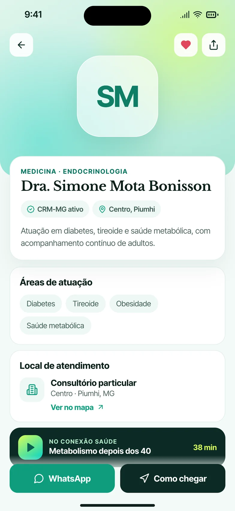
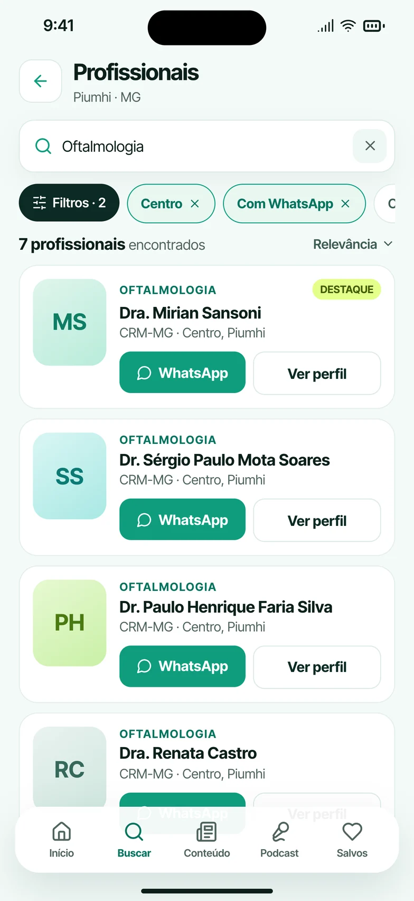
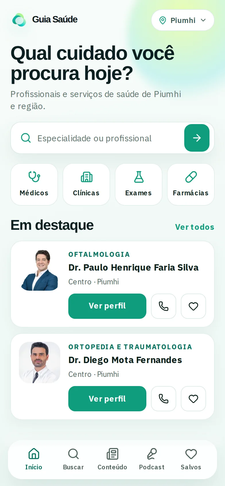
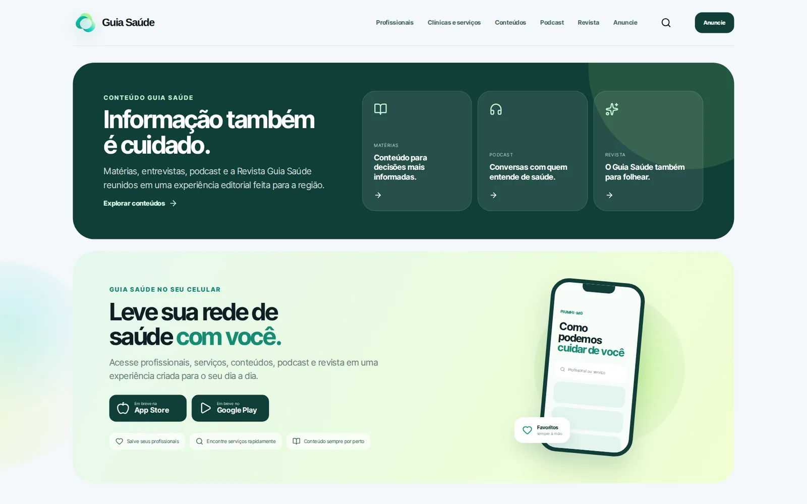
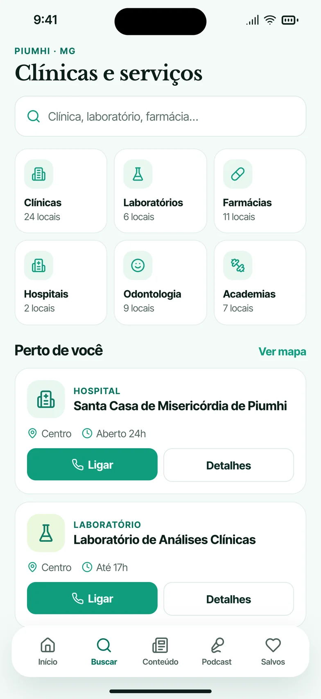
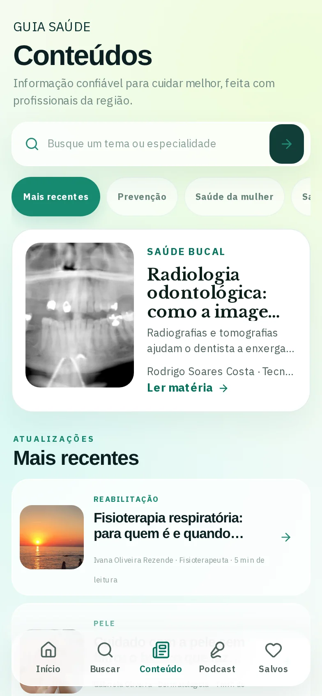

Busca por categoria
Médicos, clínicas, exames e farmácias a um toque.

Saúde local, sem complicação.
Um diretório que reúne profissionais, clínicas, serviços e conteúdos de saúde da região em uma experiência simples, feita primeiro para o celular.



Quando alguém precisa de um profissional ou serviço, a busca costuma começar em vários lugares diferentes — e sem contexto suficiente para decidir.
O Guia Saúde reúne profissionais, clínicas, serviços e conteúdos em uma experiência local, organizada e fácil de explorar: de “qual cuidado você procura hoje?” até ligar ou traçar a rota.
Médicos, clínicas, exames e farmácias a um toque.
Informações organizadas para quem está perto.
Especialidades, locais de atendimento, ligar e como chegar.
Matérias, podcast e revista digital com fontes da região.

No computador ou no celular, o mesmo caminho curto: dizer o que precisa, comparar com contexto e entrar em contato na hora.


“Olá! Qual cuidado você procura hoje?” A entrada traz busca por especialidade ou profissional, atalhos para médicos, clínicas, exames e farmácias, especialidades em um toque e os destaques da região. Em Clínicas e serviços, cada categoria mostra quantos locais existem e o que está perto, com horário e botão para ligar.
A busca combina filtros como bairro e atendimento por WhatsApp e lista cada profissional com especialidade, registro e local. No perfil, áreas de atuação, local de atendimento e dois botões que resolvem: WhatsApp e Como chegar.
Matérias, o Podcast Conexão Saúde e a Revista Guia Saúde vivem na mesma aba de Conteúdos, com player sempre à mão. No perfil, um episódio relacionado aproxima o conteúdo do profissional — e traz as pessoas de volta.